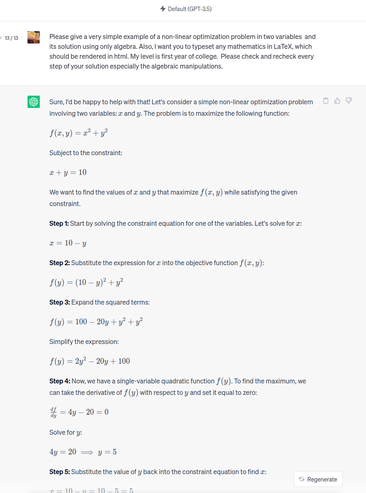

☰
+
-
1
The language of mathematics
❯
1.1 Black box warnings
1.2 Computer algebra
1.3 Objects or elements and the symbols
and
1.4 Sets
1.5 Ordering numbers
1.6 Propositional logic
1.7 What is a mathematical proof?
1.8 The concept of a function
2
Linear equations
❯
2.1 One linear equation with one unknown
2.2 Several linear equations with several unknowns
2.3 Gauss elimination
2.4 Polynomials
2.5 Applications to polynomials
2.6 Shamir secret sharing
2.7 Fitting data
3
Matrices
❯
3.1 Matrices
3.2 Linear maps
3.3 Matrix multiplication
3.4 Matrix arithmetic
3.5 The inverse matrix
3.6 The transposed matrix
3.7 Symmetric matrices
4
What is optimization?
❯
4.1 What is an optimization problem?
4.2 General definition
4.3 Convex optimization
4.4 Linear optimization
4.5 Fourier-Motzkin elimination
4.6 Application in machine learning and data science
5
Euclidean vector spaces
❯
5.1 Vectors in the plane
5.2 Higher dimensions
5.3 An important remark about the real numbers
5.4 Sequences and limits in
5.5 Continuous functions
6
Convex functions
❯
6.1 Strictly convex functions
6.2 Why are convex functions interesting?
6.3 Differentiable functions
6.4 Taylor polynomials
6.5 Differentiable convex functions
7
Several variables
❯
7.1 Introduction
7.2 Vector functions
7.3 Differentiability
7.4 Newton-Raphson in several variables!
7.5 Local extrema in several variables
7.6 The chain rule
7.7 Logistic regression
7.8 3Blue1Brown
7.9 Lagrange multipliers
7.10 The interior and the boundary of a subset
8
The Hessian
❯
8.1 Introduction
8.2 Several variables
8.3 Newton's method for finding critical points
8.4 The Taylor series in several variables
8.5 Convex functions of several variables
8.6 How to decide the definiteness of a matrix
9
Convex optimization
❯
9.1 Finding the best hyperplane separating data
9.2 Logarithmic barrier functions
9.3 A geometric optimality criterion
9.4 KKT
9.5 Computing with KKT
9.6 Optimization exercises
Introduction to Mathematics and Optimization
Niels Lauritzen
